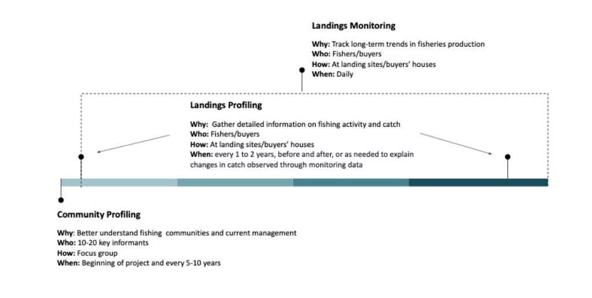
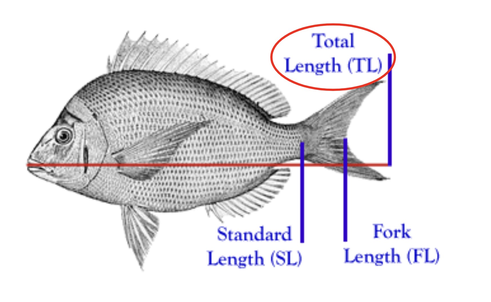
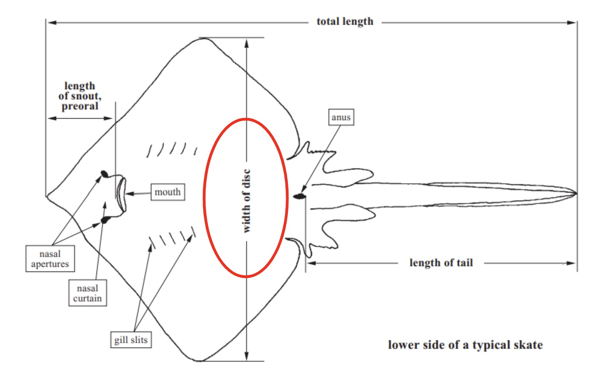
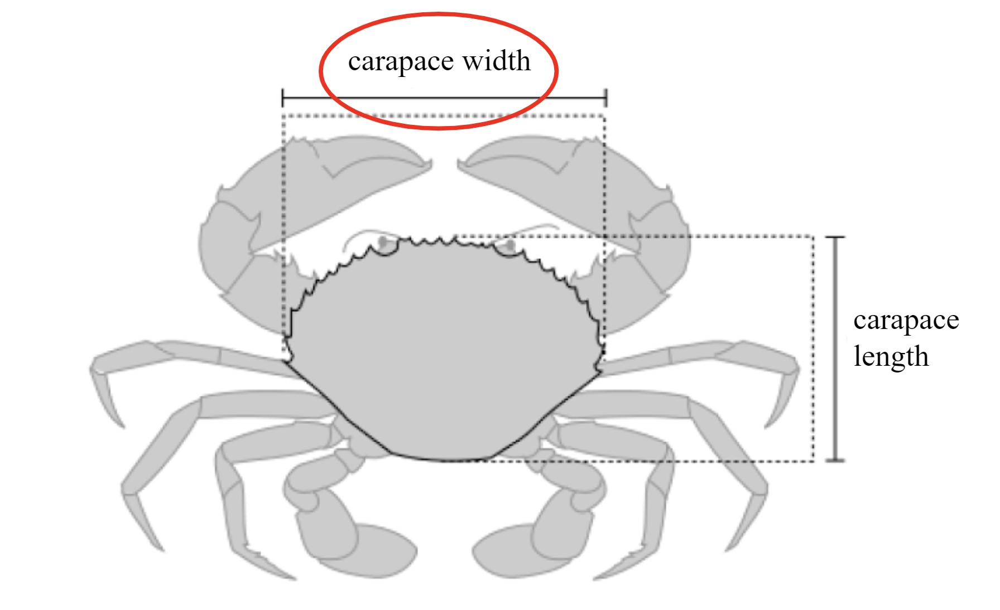
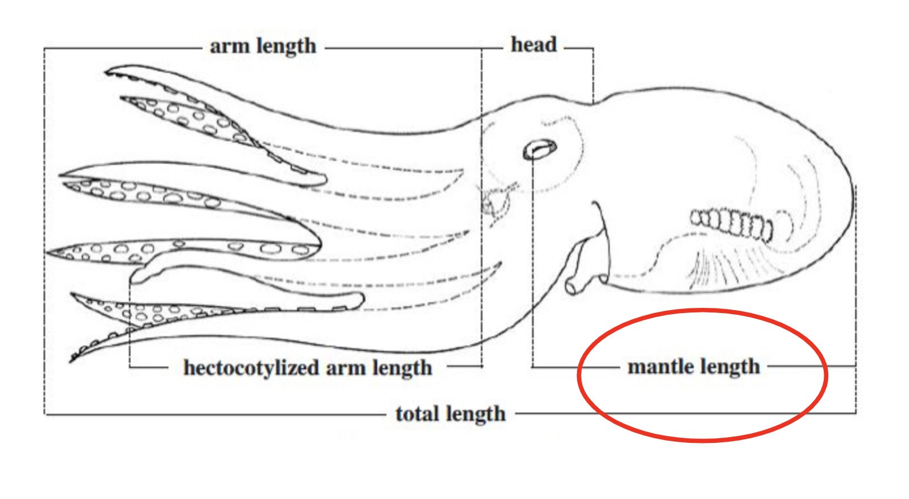
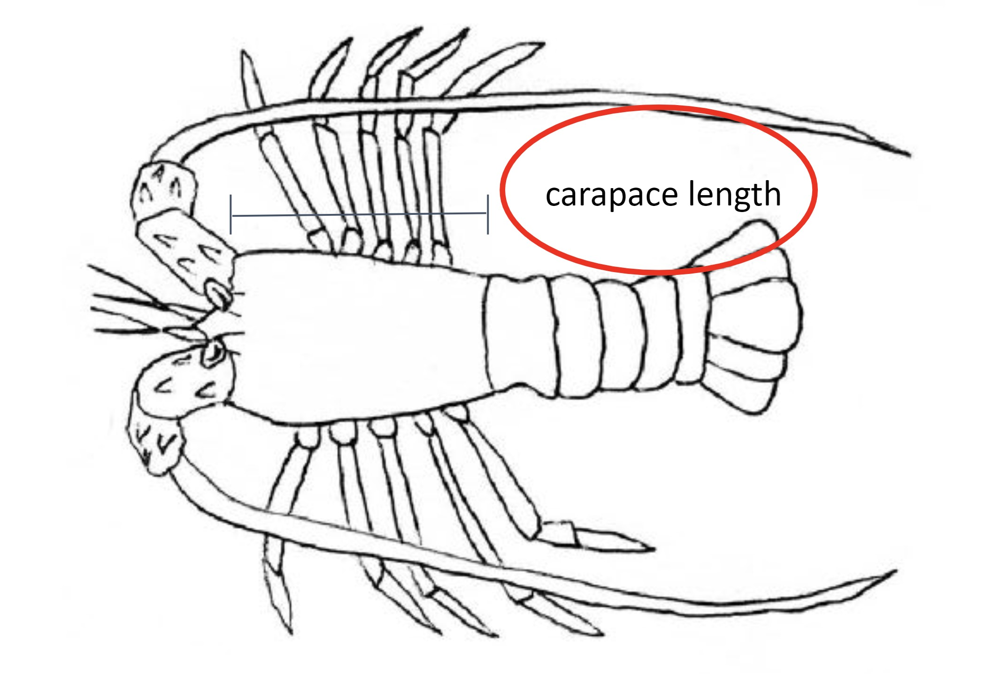
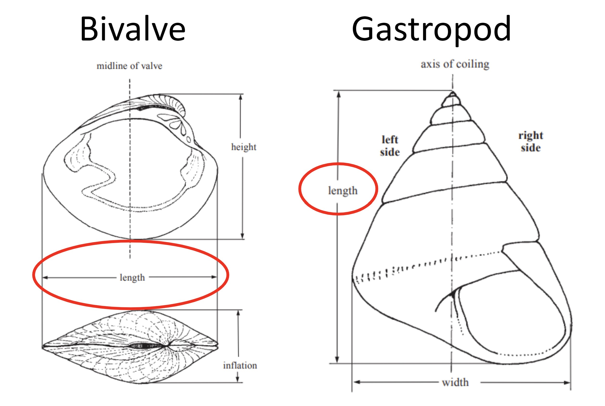
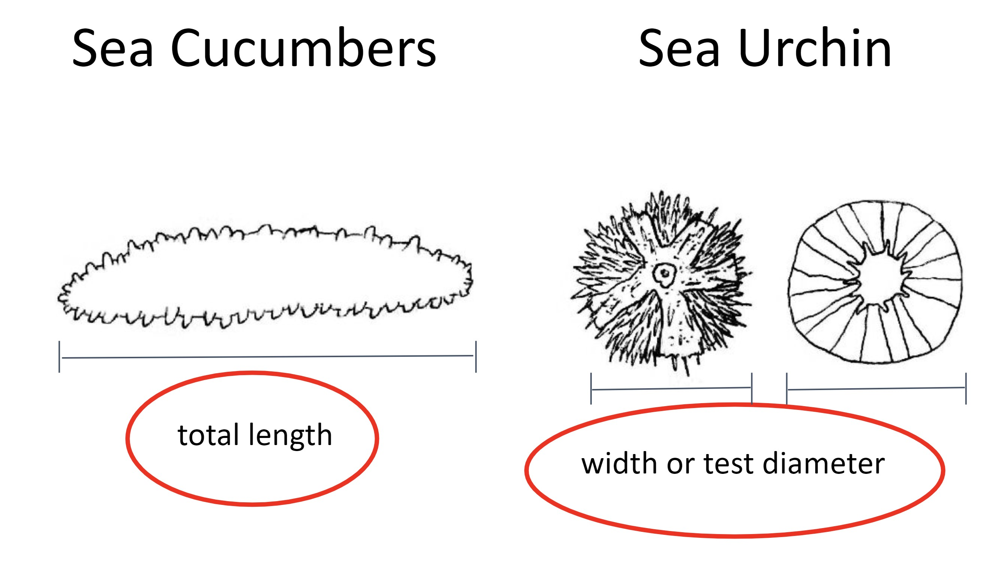
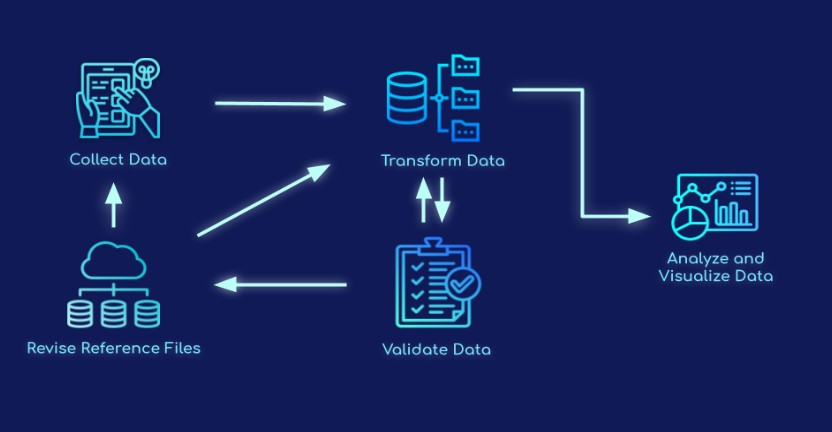

Full Guide
Orientações Relativas À Recolha De Dados Sobre As Pescas
Um guia para a gestão de inquéritos para obtenção de dados sobre as pescas
Introdução
Este documento fornece orientações e recomendações para a gestão de três instrumentos de inquérito destinados a captar informações sobre as comunidades piscatórias e as pescarias em que dependem (Figura 1). Os inquéritos foram concebidos para alinhar o conteúdo com a forma como os dados serão utilizados e a frequência esperada de mudança. O inquérito de mais alto nível, A definição de perfis comunitários, contém questões que contribuem para uma melhor compreensão da actividade pesqueira na comunidade e das condições socioeconómicas. A compreensão do panorama socioeconómico é especialmente importante quando o trabalho começa pela primeira vez numa comunidade. As informações recolhidas durante este inquérito são essenciais para conceber estratégias de envolvimento da comunidade e planos de amostragem de dados. Os inquéritos de definição de perfis e de acompanhamento dos desembarques recolhem dados sobre as capturas desembarcadas pelas pescarias. Os dados de perfil dos desembarques são recolhidos com menos frequência e captam informações sobre o habitat de pesca, o tipo de arte, o esforço e a duração de cada peixe. O inquérito de acompanhamento dos desembarques, idealmente realizado diariamente, é um inquérito rápido às pescas que recolhe a quantidade mínima de informações necessárias para acompanhar as variações do volume e do valor das capturas, tais como as espécies, o peso, a contagem e o preço.

Figura 1: Calendário para a administração dos três diferentes instrumentos de inquérito numa escala de um ano.
Detalhes Do Inquérito
Inquérito Comunitário Sobre A Definição De Perfis
Objectivo
Compreender o panorama geral da comunidade e as pescas que operam na comunidade.
Dados Recolhidos
Número de membros da comunidade, pescadores, comerciantes de peixe, mulheres
Paisagem geral das pescarias que operam na comunidade
Artes utilizadas; espécies visadas; habitat pescado; estações do ano; Navios
Informações sobre o esforço e os custos de pesca
Percepções sobre as condições da pesca e do habitat, ameaças
Informação sobre a actual gestão/regulamentação das pescas
Identificação (através de cartografia) de importantes zonas de pesca, habitats e locais de desembarque
Público-Alvo
10-20 informantes-chave na comunidade, nomeadamente líderes comunitários, pescadores respeitados, comerciantes de peixe e mulheres.
Frequência e temporização
Quando se inicia o trabalho numa nova comunidade de pescadores, a realização do inquérito comunitário sobre a definição de perfis e do exercício inicial de definição de perfis fornece dados de base e informações relevantes para conceber os esforços de conservação e de gestão mais adequados para a comunidade. A repetição do inquérito comunitário sobre a definição de perfis pode ajudar a documentar alterações significativas ocorridas ao longo do tempo.
Metodologia
As informações podem ser recolhidas através de inquéritos de terceiros (ou seja, recenseamento, registos do Departamento de pesca, etc.), grupos focais constituídos por 10-20 membros-chave da comunidade ou informantes-chave. Os líderes comunitários, bem como uma variedade de pescadores e comerciantes de peixe conhecedores e diversificados (incluindo mulheres e jovens) seriam os participantes ideais para incluir no grupo focal. Para facilitar os grupos focais, recomenda-se ter, no mínimo, um facilitador e um anotador. No grupo focal, recomenda-se igualmente que os participantes forneçam uma lista de informações de contacto para os pescadores da comunidade que possam ser contactados para administrar os inquéritos domiciliários. Se não for possível realizar o inquérito comunitário sobre a definição de perfis num formato de grupo focal, uma alternativa é administrar as mesmas perguntas que os inquéritos individuais com informantes-chave e agrupar as respostas. As perguntas incluídas no inquérito comunitário sobre a definição de perfis e as recomendações para a realização de discussões em grupos focais podem ser consultadas no Apêndice A que se segue.
Inquérito De Acompanhamento Dos Desembarques
Objectivo
Capturar os principais dados necessários para calcular indicadores simples de saúde da pesca baseados na duração e para acompanhar as alterações na produção, valor e composição da pesca.
Dados Recolhidos
Data de desembarque
Local de aterragem
Designação do comerciante de peixe
Nome Fisher
Esforço de pesca (dias de pesca / recolha)
Identidade das espécies (nomes locais, comuns, científicos)
Contagem Total
Peso Total
Preço Total
Motivo total das capturas não vendidas, se aplicável
Público-Alvo
Pescadores à medida que desembarcam as suas capturas ou numa casa/mercado de compradores de peixe.
Frequência e temporização
O Inquérito de monitorização dos desembarques deve ser realizado diariamente ou com a maior frequência possível. Realizar inquéritos de acompanhamento dos desembarques antes e depois da execução, a fim de avaliar os efeitos dos encerramentos das pescas ou de outras estratégias de gestão. Recomendamos a recolha de Dados 30 dias antes e após os períodos de encerramento temporário. Para os primeiros sete dias dos períodos de amostragem, recomendamos que os enumeradores realizem diariamente inquéritos de monitorização dos desembarques. Se possível, continue a monitorização diária durante todo o período de 30 dias. Se isso não for possível, examine pelo menos 80% dos dias em cada 30 dias. Recomenda-se igualmente que se efectue um levantamento de 80% ou mais de todos os pescadores que desembarcam nas capturas num determinado dia antes ou depois do encerramento. Distribuir esforços representativos de inquérito entre pescadores de barco e não pescadores de barco. Recolher dados de todos os pescadores que desembarcam na aldeia, independentemente de estarem ou não a pescar no local de encerramento.
No caso de encerramentos a mais longo prazo, assegurar que os dados são recolhidos durante o mesmo mês para cada ano, a fim de captar as alterações ao longo do período de encerramento. Se isso não for viável, recomendamos a recolha de dados durante o mesmo mês antes e depois do encerramento. Tal como acima referido, recomendamos que efectue um levantamento de pelo menos 80% do dia durante o mês e 80% dos pescadores que desembarcam em cada dia.
Metodologia
Através do formulário Kobo, encontre-se com os pescadores nos locais de desembarque/casas de compradores para registar as suas capturas.
Levantamento De Perfis De Desembarques
Objectivo
Compreender as tendências de captura observadas.
Dados Recolhidos
Data de desembarque
Local de aterragem
Campo de pesca primário
Designação do comerciante de peixe
Nome Fisher
Esforço de pesca (horas e dias de pesca / recolha)
Tipo de navio (número de matrícula do barco, número de tripulação)
Identidade das espécies (nomes locais, comuns, científicos)
Artes utilizadas
Habitat pescado
Contagem Total
Peso Total
Preço Total
Motivo total das capturas não vendidas, se aplicável
Amostras de pesos e comprimentos individuais (figuras 2-8)
Dados amostrais específicos dos parceiros (Sexo, qualidade das capturas, gónadas, estilete, # armadilhas, etc.)
Público-Alvo
Uma amostra representativa das capturas na comunidade. Registar pelo menos 50 amostras (idealmente 100) para cada espécie-alvo, representando vários tipos de artes e perfis de pescadores.
Frequência e temporização
Este inquérito deve ser realizado inicialmente no início do envolvimento numa comunidade e subsequentemente realizado de um a dois anos, antes e depois da implementação da estratégia de gestão, ou conforme necessário para explicar os declínios observados através de dados de monitorização. Através do formulário Kobo, reunir-se com os pescadores nos locais de desembarque para amostrar as suas capturas e registar a sua actividade de pesca.
Metodologia
Através do formulário Kobo, reunir-se com os pescadores nos locais de desembarque para amostrar as suas capturas e registar a sua actividade de pesca.
Normalização da medição: Tipo de comprimento a medir por grupo de espécies

Figura 2: o comprimento Total deve ser utilizado para medir peixes-barbatanas, tubarões e enguias (AFS).

Figura 3: a largura do disco deve ser utilizada para medir raios e patins.

Figura 4: a largura da carapaça deve ser utilizada na medição do Caranguejo (Suryandari et. al, 2018).

Figura 5: o comprimento do manto deve ser utilizado na medição de polvos e lulas (FAO).

Figura 6: O comprimento da carapaça deve ser utilizado na medição do camarão e da lagosta (Hart et al. 2001).

Figura 7: o comprimento deve ser utilizado na medição dos bivalves e gastrópodes.

Figura 8: o comprimento Total deve ser utilizado na medição dos pepinos-do-mar. A largura ou o diâmetro de ensaio devem ser utilizados na medição dos ouriços-do-mar.
Visão Geral Do Fluxo De Dados
A Barefoot Ocean processa e analisa os principais dados de pesca e socioeconómicos pertencentes a organizações parceiras através da partilha de dados. Por outras palavras, os parceiros são donos dos dados e a Barefoot Ocean processa-os. A recolha, validação, transformação e visualização de dados são os quatro principais componentes do Barefoot Ocean data system. As principais aplicações de software utilizadas são KoboToolBox, Smartsheet, PostgreSQL e R.
KoboToolBox é um software livre e de código aberto que é um poderoso kit de ferramentas para coleta de dados acessível através de ambientes desafiadores e múltiplas plataformas, como dispositivos móveis, computadores e papel. Os enumeradores recolhem dados sobre as condições socioeconómicas e ecológicas essenciais para avaliar as comunidades e o estatuto das pescas através dos questionários Barefoot Ocean KoboToolBox survey. O Smartsheet é uma plataforma colaborativa de gestão do trabalho que fornece uma interface flexível e intuitiva para as organizações planearem, acompanharem, automatizarem e gerirem vários projetos e processos em tempo real. Os ficheiros de referência utilizados para preencher formulários de inquérito e ligar dados adicionais aos conjuntos de dados principais são geridos no Smartsheet. Além disso, os dados são validados no Smartsheet. O PostgreSQL é um sistema de gerenciamento de banco de dados gratuito e de código aberto usado como um data warehouse para inúmeras aplicações web, analíticas e geoespaciais, armazenando dados não estruturados e estruturados em um único produto. R é um ambiente de software livre e de código aberto e linguagem de programação amplamente utilizada para ciência de dados, computação estatística e visualização de dados. Os painéis de dados são construídos usando o pacote Shiny da linguagem de Programação R e hospedados em shinyapps.io, uma plataforma como serviço (PaaS) para hospedar aplicativos da Web brilhantes (aplicativos).

Figura 9: Diagrama de fluxo de dados oceânicos descalços.
A recolha de dados envolve a recolha e medição sistemática de informações de fontes relevantes sobre variáveis de interesse para a tomada de decisões, planeamento estratégico, avaliações de resultados e outros fins. Ao incorporar dados quantitativos e qualitativos nos questionários do inquérito, a Barefoot Ocean concentra-se em inquéritos de método misto no processo de recolha de dados para desenvolver uma compreensão mais aprofundada das condições socioeconómicas e ecológicas pertinentes para as comunidades pesqueiras e estratégias de gestão adaptativa. A validação de dados refere-se à aplicação de métodos para medir as condições dos dados recolhidos e determinar se os dados recolhidos satisfazem os critérios de qualidade definidos, tais como precisão, consistência, relevância, completude e exclusividade. A transformação de dados converte, limpa e estrutura dados brutos em um formato utilizável que pode ser analisado e avaliado para a tomada de decisões. A análise e visualização de dados envolve a concepção e criação de gráficos acessíveis ou exibições visuais de informações para comunicar eficazmente os dados qualitativos e quantitativos complexos previamente recolhidos, verificados e transformados entre os públicos-alvo. Descrevemos o processo de fluxo de dados abaixo:
Os dados são recolhidos através de formulários de inquérito KoboToolBox.
Os dados são extraídos para a base de dados Barefoot Ocean.
Se o enumerador selecionou opções de resposta pré-preenchidas em inquéritos, os dados não precisam de ser validados e podem passar diretamente para o processo de análise e visualização dos dados.
Se o enumerador inserir dados manualmente, como um novo pescador, comprador, coletor de dados, local de pouso ou espécie, os dados serão verificados no Smartsheet antes de serem incluídos na tabela de dados final e visualizados no painel. Os líderes das equipas de campo são notificados por e-mail quando os dados estão prontos para validação. Os líderes de equipa verificarão manualmente as tabelas de controlo de qualidade para confirmar que as informações recentemente adicionadas são válidas.
Após a validação, novos dados são enviados para os arquivos de referência e de volta ao banco de dados para transformação final antes da análise e visualização.
Assim que os dados forem enviados para os ficheiros de referência, os responsáveis da equipa serão notificados por e-mail se forem necessárias informações adicionais nos ficheiros de referência.
Os ficheiros de referência actualizados são então carregados na plataforma KoboToolBox para inclusão nos formulários.
Os dados actualizados dos ficheiros de referência são também utilizados no processo de transformação de dados para juntar campos de dados adicionais, como coordenadas e género.
As etapas finais do processo de transformação de dados resultam em tabelas de dados mestre que são usadas para análise e visualização de dados nos painéis de dados.
Os painéis de dados (ou seja, aplicações brilhantes) ligam-se directamente à base de dados, obtendo os dados mais actualizados disponíveis, proporcionando assim aos parceiros um acesso quase imediato a dados brutos e resumidos.
Segurança Dos Dados
Segue-se uma lista de plataformas de software em que os dados podem ser armazenados e movidos em trânsito a partir da base de dados. As informações sobre a segurança dos dados de cada plataforma externa estão disponíveis no sítio Web específico da plataforma ligado aqui.
A Barefoot Ocean implementou vários procedimentos de segurança de dados, além das medidas de segurança de dados fornecidas pelas plataformas de software acima. Todas as contas em todas as plataformas de software utilizadas pela Barefoot Ocean estão protegidas por palavra-passe.
Usamos o Github como nosso sistema de controle de versão para produtos codificados. Por defeito, todos os dossiers e projectos com dados de pesca e socioeconómicos são privados e apenas acessíveis ao pessoal e empreiteiros da Barefoot Ocean.
A partir de quaisquer plataformas de dados partilhados (por exemplo, aplicações Shiny), a autenticação do utilizador é necessária para visualizar ou descarregar dados, dependendo do Acordo de partilha de dados escolhido por cada organização parceira. Isso inclui a verificação dos usuários antes de permitir que os dados sejam visualizados ou baixados, Os usuários que fazem login em plataformas de visualização de dados e o gerenciamento regular de usuários verificados pela equipe Barefoot Ocean.
O acesso aos documentos do Smartsheet (por exemplo, ficheiros de referência, folhas de validação de dados) é restrito ao pessoal identificado por cada organização, e cada parceiro só pode visualizar as suas próprias informações específicas do parceiro. As excepções incluem a equipa da Barefoot Ocean que controla e presta assistência com fluxos de trabalho de qualidade de dados e a equipa da Blue Ventures que presta assistência aos parceiros com fluxos de trabalho de informação no Smartsheet.
O acesso à base de dados principal da Barefoot Ocean limita-se ao pessoal e empreiteiros da Barefoot Ocean.
Privacidade Dos Dados
As informações pessoais identificáveis (PII) e os dados relativos às capturas de pesca são propriedade de pescadores e compradores de peixe e nunca serão partilhados sem o consentimento prévio. Para proteger a privacidade da fisher, dos compradores e dos coletores de dados, todos os nomes são anonimizados em números de identificação aleatórios. Por conseguinte, todos os dados parcial ou totalmente disponíveis ao público incluirão apenas os números de identificação numéricos aleatórios. Consulte a secção sobre partilha de dados para obter uma explicação completa dos acordos de partilha de dados.
Os dados considerados PII incluem:
Nomes dos Pescadores, compradores e colectores de dados
Nomes dos inquiridos para quaisquer inquéritos
Partilha De Dados
O Barefoot Ocean fisheries data system foi concebido para simplificar a utilização dos seus dados e fornecer uma plataforma para o seu envolvimento ativo em esforços mais amplos de gestão e conservação das pescas. Os dados agregados recolhidos de forma colaborativa entre os parceiros podem fornecer informações poderosas para monitorizar a pesca, avaliar estratégias de gestão, orientar a tomada de decisões a nível local e nacional, compreender as mudanças regionais e identificar potenciais serviços financeiros.
Reconhecemos a importância crítica da propriedade e utilização dos dados para todos os parceiros contribuintes. O nosso objectivo é proporcionar-lhe flexibilidade na gestão e determinação da forma como os seus dados são utilizados. Ao selecionar um dos três níveis de permissão de uso de dados, você pode regular até que ponto seus dados são compartilhados com outros usuários. Você pode adaptar os níveis de permissão com base nos tipos de dados e, mais importante, você tem a liberdade de ajustar seu nível de permissão de dados a qualquer momento. As informações pessoais identificáveis (PII) e os dados relativos às capturas de pesca são propriedade de pescadores e compradores de peixe e nunca serão partilhados sem o consentimento prévio. Ao escolher um nível de autorização de utilização de dados, confirma que foram obtidas autorizações individuais tanto de pescadores como de compradores de peixe.
Todos os dados estão actualmente definidos para o Nível 1 - Privado. Os usuários terão a oportunidade de ajustar seus níveis de permissão conforme necessário.
Nível 1-Privado
Os dados são estritamente para fins internos do Contribuinte de dados original.
Os dados estarão disponíveis para download pelo contribuinte de dados original.
Os dados não serão incluídos nas análises regionais fornecidas no painel.
A partilha ou distribuição não autorizada dos dados a terceiros é estritamente proibida.
Nível 2-Partilha com outros contribuintes de dados
Os dados de nível de viagem estão disponíveis para download por outros contribuintes de dados.
Resumos e visualizações de dados estarão disponíveis para outros contribuidores de dados.
Os dados serão incluídos nas análises regionais no painel.
Nível 3-partilhar com todos os utilizadores
Os dados de nível de viagem estão disponíveis para download por todos os utilizadores.
Resumos e visualizações de dados estarão disponíveis para todos os utilizadores.
Os dados serão incluídos nas análises regionais no painel.
O contribuinte dos dados originais pode especificar quaisquer limitações ou condições de Utilização aplicáveis a todos os utilizadores.
Validação de dados novos e sinalizados
Nas pesquisas, algumas perguntas permitem que os enumeradores adicionem um novo pescador, comprador, coletor de dados, local de pouso, espécie ou “outro.”As informações dessas opções são novos pontos de dados e devem passar por verificação antes de serem enviadas para o conjunto de dados final, visualizadas no painel e adicionadas aos arquivos de referência. Existem também restrições relativas ao peso, preço e comprimento de uma espécie e, se os dados recolhidos forem inferiores ou superiores a essas restrições, esses valores são sinalizados para revisão. As restrições relativas ao peso e ao preço são definidas pelos parceiros no min_max_ref. As restrições de comprimento das espécies são definidas pela Equipa Barefoot Ocean utilizando parâmetros biológicos.
Todos os dados que fluem através do sistema de dados das pescas são validados no Smartsheet. Qualquer uma dessas entradas novas ou sinalizadas é enviada para a tabela de controle de qualidade (QA) no Smartsheet para que as equipes de campo validem. As tabelas de controlo de qualidade são específicas do parceiro e podem ser acedidas através de pedidos de atualização enviados para o seu e-mail ou visitando as ligações de visualização dinâmica que lhe são fornecidas. Os líderes da equipa de campo serão notificados por e-mail quando os dados precisarem de ser validados nas tabelas de controlo de qualidade. Uma vez verificados os dados nas tabelas de controlo de qualidade, acrescentaremos novas informações ao ficheiro de referência e forneceremos as correcções necessárias ao conjunto de dados principal.
Instruções passo a passo específicas sobre como concluir a validação de dados no Smartsheet podem ser encontradas na página validação de dados.
Recolha De Dados
A Barefoot Ocean administra todos os inquéritos através de formulários Kobo Toolbox partilháveis através de uma conta Kobo Toolbox. Pode configurar uma conta em https://kf.kobotoolbox.org/accounts/signup/. entre em contato com a equipe Barefoot Ocean com seu nome de usuário e detalhes da conta. Uma vez partilhados os inquéritos, aceda aos formulários Kobo através da aplicação móvel KoboCollect free para Android ou através do formulário Web Enketo. Instruções detalhadas sobre a criação de uma conta Kobo, recolha de dados e apresentação de dados podem ser encontradas na página de configuração da Kobo. Use um código QR para configurar todos os dispositivos depois de configurar manualmente o primeiro telefone ou tablet para configurar vários telefones ou tablets em uma conta de coleta de dados. A configuração Manual do primeiro dispositivo requer o URL do servidor Kobo, o nome de utilizador e a palavra-passe. O URL do servidor Kobo é https://kc.kobotoolbox.org. mais informações sobre como configurar a recolha de dados com a Kobo, incluindo como configurar vários dispositivos de recolha de dados através de um código QR, podem ser encontradas em https://support.kobotoolbox.org/.
Depois de ter descarregado o KoboCollect, abra a aplicação e introduza o URL do servidor, o nome de utilizador e a palavra-passe para ligar a aplicação KoboCollect ao servidor KoboToolbox. A ligação da aplicação KoboCollect ao servidor KoboToolbox permite-lhe transferir formulários implantados da KoboToolbox para o seu dispositivo móvel e enviar os dados recolhidos através da aplicação de volta para o servidor. Na tela inicial, selecione ” Obter Formulário em branco.”Uma lista de todos os seus formulários de pesquisa implantados deve aparecer. Pressione “Selecionar tudo” para que todos os formulários de pesquisa sejam enviados para o aplicativo ou selecione os que deseja, selecionando-os manualmente. Em seguida, clique em ” obter selecionado.”Para implementar o inquérito, selecione” Preencher formulário em branco.”
Embora o formulário Web seja atualizado automaticamente quando uma nova versão do questionário estiver disponível, os usuários devem configurar a “atualização automática” no aplicativo. A atualização regular das pesquisas no aplicativo garante o uso da versão mais recente do formulário e não causa problemas no pipeline de dados. Você pode configurar a atualização automática no aplicativo acessando” Configurações “e” gerenciamento de formulários.”Mais informações sobre a atualização automática de inquéritos na aplicação podem ser encontradas na página de configuração da Kobo. É importante observar que é necessária uma conexão para que o aplicativo Obtenha a versão de pesquisa mais recente, mesmo com as configurações de atualização automática ativadas. Portanto, aconselhe os enumeradores a ter uma conexão com a internet antes de realizar o trabalho de campo para que o KoboCollect possa obter a versão mais recente.
Após a recolha dos dados, os inquéritos enviados através do formulário web serão automaticamente enviados ao servidor assim que o coletor de dados clicar no botão “enviar”. Os dados recolhidos através da aplicação KoboCollect são primeiro guardados na aplicação num local de retenção e, em seguida, enviados para o servidor. As pesquisas concluídas permanecem em espera antes de serem enviadas ao servidor para que os coletores de dados possam fazer edições de pesquisa após a coleta de dados ou, se não houver conexão com a internet, o aplicativo pode salvar as pesquisas e, em seguida, enviar as pesquisas para o servidor assim que houver conectividade com a internet. Especificamente, quando a pesquisa estiver concluída, o usuário clicará em “Salvar formulário e sair”, garantindo que “marcar formulário como finalizado” também seja verificado. “Editar formulário salvo” armazena automaticamente o formulário salvo. O coletor de dados pode fazer as alterações necessárias e selecionar ” Salvar formulário e sair.”A tela inicial também possui um botão chamado “Enviar formulário finalizado.”Pressione Selecionar tudo (ou selecione os que deseja carregar) e, em seguida, pressione “Enviar selecionado.”Selecione” Visualizar formulário enviado ” para garantir o carregamento bem-sucedido dos formulários e agora você poderá visualizar todos os formulários enviados.
Um sistema central de armazenamento de dados liga-se aos dados Kobo e as análises e visualizações automatizadas estarão disponíveis através de um painel normalizado. Os dados brutos são armazenados em cópia de segurança na Base de dados KoboToolbox e estarão disponíveis através de transferência ou ligação directa a outra base de dados ou armazém de dados.
Traduções
As traduções para todos os idiomas são concluídas editando as folhas de tradução no Smartsheet. Se você achar que uma tradução precisa ser atualizada ou está errada nas pesquisas, atualize diretamente a tradução correspondente na folha apropriada do Smartsheet. Se a equipa Barefoot Ocean precisar de novas traduções, irá comentar e atribuir a tarefa ao líder da equipa do país.
Ficheiros De Referência
Os ficheiros de referência são parceiros ou específicos de cada país e contêm informações completas sobre os níveis administrativos das comunidades piscatórias (País, Província, Distrito, Aldeia), locais de desembarque, pescadores, compradores, coletores de dados, dados de espécies, áreas de gestão, tipos de habitats, tipos de artes e organizações parceiras. Algumas informações preenchem as listas suspensas nos inquéritos e algumas são associadas ao conjunto de dados mestre após a recolha dos dados. Novas informações devem ser acrescentadas directamente às folhas de referência.
Instruções passo a passo específicas sobre como atualizar arquivos de referência no Smartsheet podem ser encontradas na página Arquivos de referência.
Apêndice A: Guia De Discussão Dos Grupos Focais
Considerações importantes antes da realização de perfis ou inquéritos sobre a pesca
Relação e confiança
Construir relações e conquistar a confiança da Comunidade é um passo inicial Importante Antes de se perguntar sobre a informação sobre as pescas. O primeiro passo para construir relacionamentos e ganhar a confiança da Comunidade é apresentar a si mesmo, à sua organização e ao propósito de realizar perfis de pesca.
Preparação
A preparação é importante na realização de cada método de inquérito, uma vez que uma boa preparação lhe dará confiança na eficácia de cada método que aplicar.
Tempo de recolha de informações
Ajustar o tempo de condução de cada método ao tempo do potencial entrevistado ou do grupo comunitário visado.
Respondente
Compreender os potenciais inquiridos que irá encontrar durante a definição de perfis das pescas é crucial para a realização de inquéritos. Os grupos ou indivíduos que participarão no inquérito devem receber uma notificação prévia. Por conseguinte, a introdução de líderes comunitários influentes deve fazer parte do trabalho de pré-inquérito.
Logística
Cada método tem necessidades logísticas e materiais. Certificar-se de que foram preparados os recursos e o equipamento necessários para cada método de perfilamento das pescas.
Lista de contactos da pessoa-chave
Salve uma lista de contatos de pessoas-chave em seu telefone e também tenha uma versão impressa para backup.
Saúde e segurança
Certifique-se de que está em boas condições para realizar a definição de perfis de pesca. Traga um kit de Primeiros Socorros essencial.
Orientação Para Discussão Em Grupos Focais
A seguir, contém orientações e recomendações sobre a realização de um grupo focal para capturar informações de perfil da comunidade. Recomenda-se a realização de uma sessão de grupo focal para incentivar o diálogo, captar uma diversidade de opiniões e começar a construir relações com membros importantes da comunidade. No entanto, no caso de um grupo focal não ser viável, o inquérito comunitário sobre a definição de perfis pode ser realizado como entrevistas individuais com partes interessadas importantes, utilizando o formulário Kobo “inquérito comunitário sobre a definição de perfis”. De um modo geral, o objectivo do exercício comunitário de definição de perfis, quer em grupo focal quer em formato de entrevista individual, é compreender o panorama geral da comunidade e as pescas que operam na comunidade.
I. Antes da realização de um grupo focal
Antes de sediar um grupo focal formal de definição de perfis das pescas, recomenda-se a realização de conversações informais e a observação participante. Este método significa gastar tempo, construir relacionamentos e compreender a pesca usando conversas informais e observação participante.
Uma conversa Informal é importante para compreender melhor o contexto geral das pescas antes de realizar uma discussão em grupo focal. Utilizar este método como um dos pontos de partida para formular o conteúdo do debate em grupo focal. Este método permitirá conhecer a comunidade pesqueira, começar a construir relações e ganhar confiança.
Dicas recomendadas para conduzir conversas informais:
Respeite as diferenças culturais. Observe as normas sociais, como saudações aceitáveis, códigos de vestimenta e respeite as práticas religiosas. Seja educado, humilde e ouça as opiniões das partes interessadas sem impor as suas. Permanecer dentro de uma comunidade, construir um relacionamento e compartilhar refeições pode ajudar a construir confiança.
Passar tempo com as partes interessadas. Não há atalho para ganhar confiança e apoio. Especialmente nas comunidades, é bom ser visto, passar tempo nas aldeias e conhecer pessoas. Esteja preparado para discutir as questões mais amplas na comunidade. Não tente empurrar uma agenda específica.
Utilizar a língua local, se possível, a menos que uma língua comum esteja acessível. Caso contrário, use um intérprete. Esteja atento aos erros de tradução. A verificação cruzada da tradução entre mais do que um intérprete pode ajudar a reduzir a má interpretação.
Não faça promessas que não possam ser cumpridas. Seja claro sobre os objetivos e os resultados esperados sem aumentar as expectativas. É importante sublinhar isto desde o início, para que as comunidades tenham uma compreensão clara do papel do parceiro técnico, ou seja, para facilitar o encerramento da pesca do polvo, não para cavar poços ou reparar escolas. É importante garantir que todos estejam cientes do que a organização pode ou não fazer na comunidade. Garantir expectativas realistas ajuda a minimizar decepções, reclamações e conflitos à medida que o projeto avança.
Comunicar amplamente os planos e as actividades. Garantir que quaisquer reuniões ou atividades sejam planeadas com antecedência e em horários e locais mutuamente acordados para maximizar a participação. Assegurar que quaisquer alterações nos planos e actividades sejam comunicadas o mais cedo possível. Chegar a tempo e aderir a acordos ajuda a criar confiança entre as partes interessadas.
Reconhecer sempre as partes interessadas nos resultados dos projetos, tais como relatórios e comunicados de imprensa, nas reuniões das partes interessadas e nas apresentações externas. Estar ciente da ‘propriedade’ da informação e respeitar a confidencialidade e a privacidade.
Uma melhor compreensão do panorama das partes interessadas na comunidade é um objectivo crucial na realização de conservações informais e na observação participante. As partes interessadas afectam ou podem ser afectadas pelas acções de uma organização. O seu apoio é essencial para o sucesso de uma organização na implementação de planos de gestão das pescas. Ao compreender melhor as partes interessadas, identificará eficazmente as partes interessadas envolvidas no futuro acompanhamento das pescas para a gestão das pescas na sua área.
Exemplos de tipos de partes interessadas a incluir:
Pescadores
Chefe da aldeia
Líderes religiosos / religiosos
Chefe de Distrito
Agente Comunitário de saúde/profissional de saúde
Aldeia comprador / fornecedor
Fábrica de transformação
Mulheres na aldeia / esposas de pescadores
Informações a recolher sobre as partes interessadas:
- Informações sobre as principais partes interessadas e suas posições em relação aos objetivos de uma entidade (grau de apoio, poder, etc.). Estas informações podem ser utilizadas para identificar as partes interessadas a incluir no grupo focal de definição de perfis da comunidade.
Depois de conduzir conversas informais, o próximo passo que você pode fazer é a observação participante. A observação é um método que permite que você use os eventos ao seu redor para reunir pistas e gerar conclusões sobre locais ou experiências específicas, observando um dia na vila de pescadores. Este método é necessário para reunir provas a partir das informações fornecidas em conversas informais. Este método permite compreender as actividades quotidianas da aldeia piscatória.
II. Procedimentos Dos Grupos Focais
A. Organização do grupo focal
É importante manter boas relações com as comunidades-alvo. Por conseguinte, sempre que possível, as aldeias devem ser informadas do programa para a reunião do grupo focal com pelo menos duas semanas de antecedência.
Se a aldeia tiver uma recepção de telemóvel, ligue para o chefe da aldeia ou para outro(s) contacto (s) local (s).
Se a aldeia não tiver recepção de telemóvel, faça uma visita à aldeia para se encontrar com o chefe da aldeia ou outro(s) contacto (s) local (s).
Durante este telefonema ou visita ao presidente da aldeia ou a outro(s) contacto (s) local (s), explique o seguinte:
Objectivo da reunião
Local da reunião
Data e hora da reunião
Método de informação dos participantes da reunião
Número de participantes
Todos os aldeões ou pessoas especiais com base nos melhores pescadores (2)
Pescadores mais frequentes (2)
Pescadores que frequentam muitos locais de pesca diferentes (2)
Pescadores respeitados, de preferência com experiência em cartografia (2)
Mulheres-verifique com o chefe da aldeia se o grupo focal pode ocorrer com ambos os sexos presentes juntos com antecedência, como em algumas áreas, isso nem sempre é possível.
Tente evitar a realização da(s) Reunião (s) durante as marés de primavera/época alta de pesca, uma vez que muitos dos Pescadores requeridos provavelmente estarão ocupados a pescar.
Certifique-se de verificar os cronogramas de outros projetos que possam estar trabalhando na mesma área ao mesmo tempo para evitar confrontos.
B. Equipa do grupo focal
A seguir estão as funções recomendadas para a equipe que lidera o grupo focal. No mínimo, um grupo focal deve ter um facilitador e um anotador.
Facilitador principal: lidera e modera a reunião
Apresenta a reunião
Facilita o evento
Modera o processo
Actua como catalisador entre os indivíduos do grupo
Encontra formas de integrar pessoas dominantes e tranquilas e assegura que todos os membros do grupo são capazes de expressar as suas opiniões
Certifica-se de que o grupo mantém o tema, mas também é flexível no tratamento de informações importantes adicionais
Repete com as suas próprias palavras o que as pessoas dizem, a fim de confirmar que existe uma boa compreensão do debate
Cuida da gestão do tempo
Assistente do Facilitador: auxilia o facilitador principal, especialmente na exibição de recursos visuais
Apoia o anotador na recolha de todas as informações pertinentes
Lidera a exibição de recursos visuais e auxilia com outros componentes interativos da reunião, como contagem de votos, anotações que são exibidas, distribuição de materiais, etc.
Traz consigo o material necessário
Auxilia o facilitador de forma indireta, dando sinais (por exemplo, apontando aqueles que desejam falar).
Apoia directamente o facilitador, fazendo perguntas, se a situação o exigir.
Anotador: documenta a reunião
Observa o evento a partir do fundo
Captura todas as respostas. É útil imprimir a lista de perguntas para que possa ser anotada com notas durante a reunião.
Anota todas as informações importantes
Nota quem fala. Existe uma participação igualitária de todos ou algumas pessoas dominam o processo? As mulheres falam?
C. Participantes do grupo focal
Planeje cuidadosamente quem convidar para a reunião do grupo focal. Recomenda-se a identificação de 10-12 indivíduos para garantir que a dimensão é gerível, permitindo uma representação adequada de diferentes perspectivas. Na medida do possível, incluir representantes de diversos grupos de partes interessadas e sectores comunitários (ver exemplos de tipos de partes interessadas na secção supra). Ao selecionar os participantes, ter em conta os seus conhecimentos e funções na comunidade. Convidar pessoas com maior conhecimento das Pescas e da comunidade, como um pescador a tempo inteiro em vez de um pescador ocasional de recreio, fornecerá informações mais robustas e precisas. Identificar e convidar pessoas respeitadas na comunidade ajuda a criar confiança.
D. Discussão logística e metodologia
Os dados podem ser capturados no formulário Kobo” Community Profiling Survey”. No entanto, pode ser mais fácil para o anotador capturar os dados através de notas escritas, a fim de capturar mais facilmente nuances e informações que surgem da discussão em grupo, como respostas diferentes por entrevistado.
Se a informação for recolhida através de anotações. Após a conclusão da reunião do grupo focal, as respostas devem ser inscritas no formulário Kobo “Community Profiling Survey”.
Incentivar todos os membros do grupo a falar, pois representam uma mistura de idades e posições sociais que podem ter experiências diferentes da pesca.
Fazer perguntas uma a uma ao grupo e esperar que os voluntários respondam é uma abordagem para conduzir uma discussão. No entanto, variar a forma como o facilitador solicita respostas pode ajudar a manter a discussão interessante e também garantir que todas as vozes sejam ouvidas e que menos participantes vocais possam participar. Antes de iniciar o grupo focal, pense em como você gostaria de obter respostas para cada pergunta planejada.
Fórum aberto - qualquer pessoa pode responder à pergunta e falar.
Apelo a participantes específicos-isso pode ajudar a garantir que menos participantes vocais tenham a oportunidade de falar. Isso pode ser usado posteriormente na discussão, uma vez que o facilitador tenha uma noção de quais participantes podem se beneficiar de serem chamados. Em alternativa, um facilitador pode utilizar esta técnica quando souber que um determinado participante tem conhecimentos ou informações importantes relacionados com uma questão.
Resposta rápida-faça um círculo e cada pessoa partilha brevemente a sua opinião / resposta à pergunta. Isso pode ser eficaz na votação do público, pois envolve todos. No entanto, certifique-se de comunicar claramente e impor limites de tempo ou este método pode acabar drenando muito tempo de discussão.
Votação-sondar o público fazendo uma pergunta e fazendo com que as pessoas levantem a mão de acordo com diferentes opções de resposta. Isso pode ser feito abertamente ou anonimamente com os olhos fechados ou com pessoas escrevendo suas respostas em pedaços de papel dobrados que são então coletados.
Grupos-divida o grupo em grupos menores que discutem e reportam ao grupo principal. Esta técnica é especialmente útil para grupos grandes quando não há tempo suficiente para todos os membros do grupo participarem no fórum completo do grupo. Nesta situação, certifique-se de que cada grupo tem partes interessadas que representam opiniões e perspectivas diferentes.
III. Perguntas Dos Grupos Focais
Comece o grupo focal apresentando-se, o projeto e o objetivo da reunião. Então, peça a todos na sala que se apresentem. Planeje os melhores métodos para cada pergunta para obter e coletar respostas com antecedência (veja a seção acima para ideias). Por favor, consulte o documento do inquérito sobre perfis comunitários para obter a lista completa das perguntas dos grupos focais a analisar.
IV. Recursos de facilitação (disponível em inglês)
Facilitator Core Competencies – International Association of Facilitators (IAF)
Facilitator’s Meeting Checklist – Social Transformation Project, Tools for Transformation
Introduction to Planning and Facilitating Effective Meetings – Social Science Tools for Social Programs, NOAA Coastal Services Center
Group Facilitation and Problem-Solving – Community Tool Box, Center for Community Health and Development at the University of Kansas
Section 1:Conducting Effective Meetings
Section 2:Developing Facilitation Skills
Section 3:Capturing What People Say: Tips for Recording a Meeting
Section 4:Techniques for Leading Group Discussions